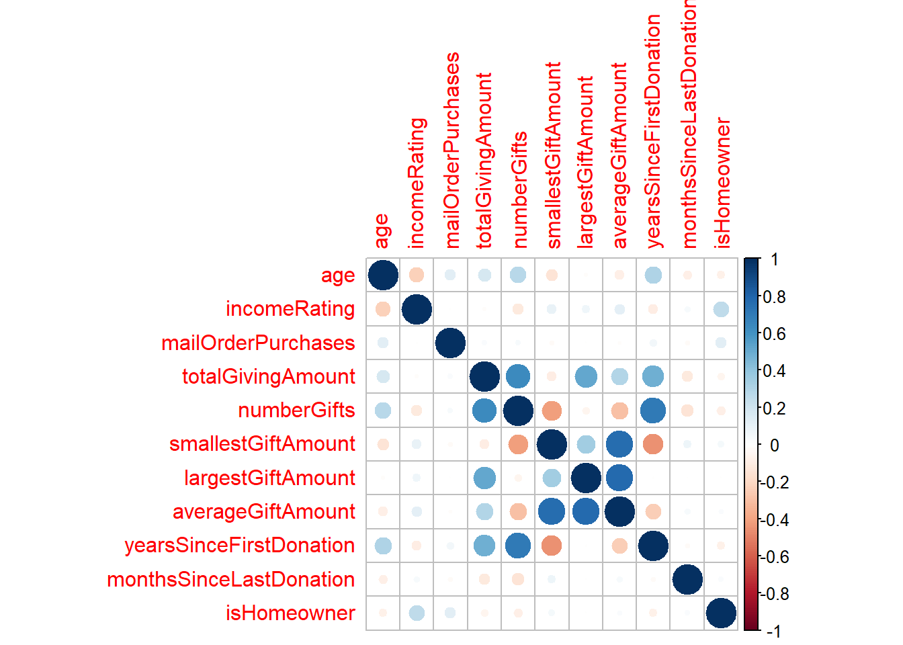
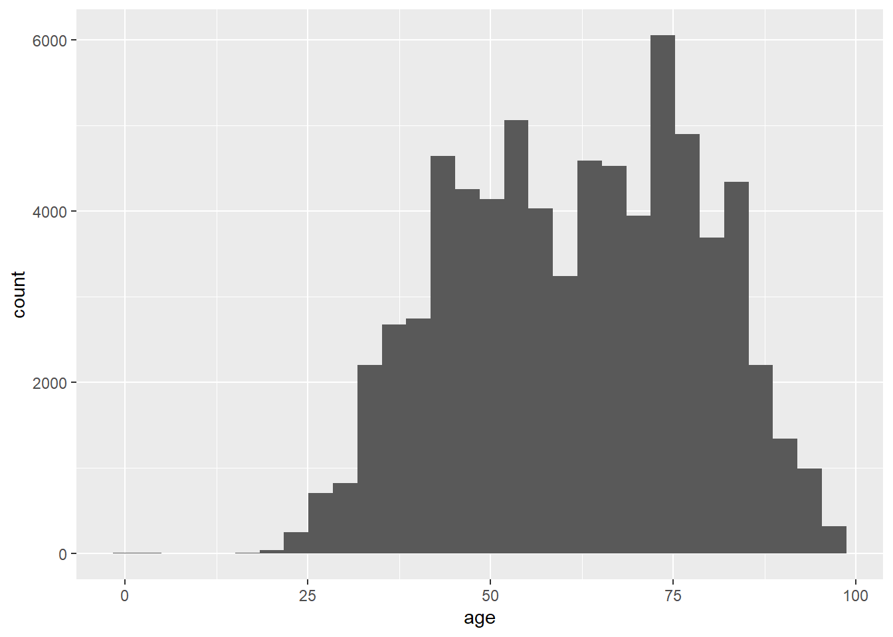
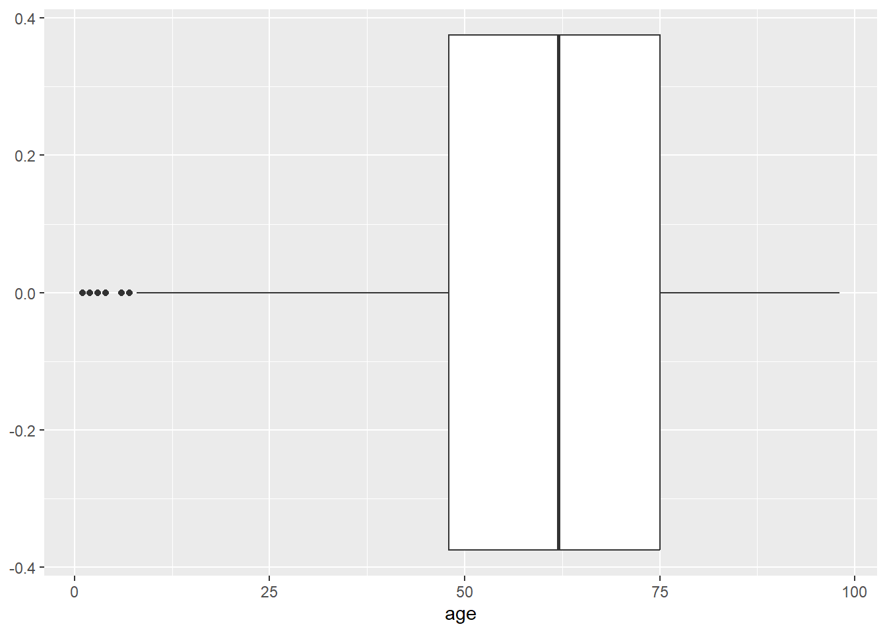
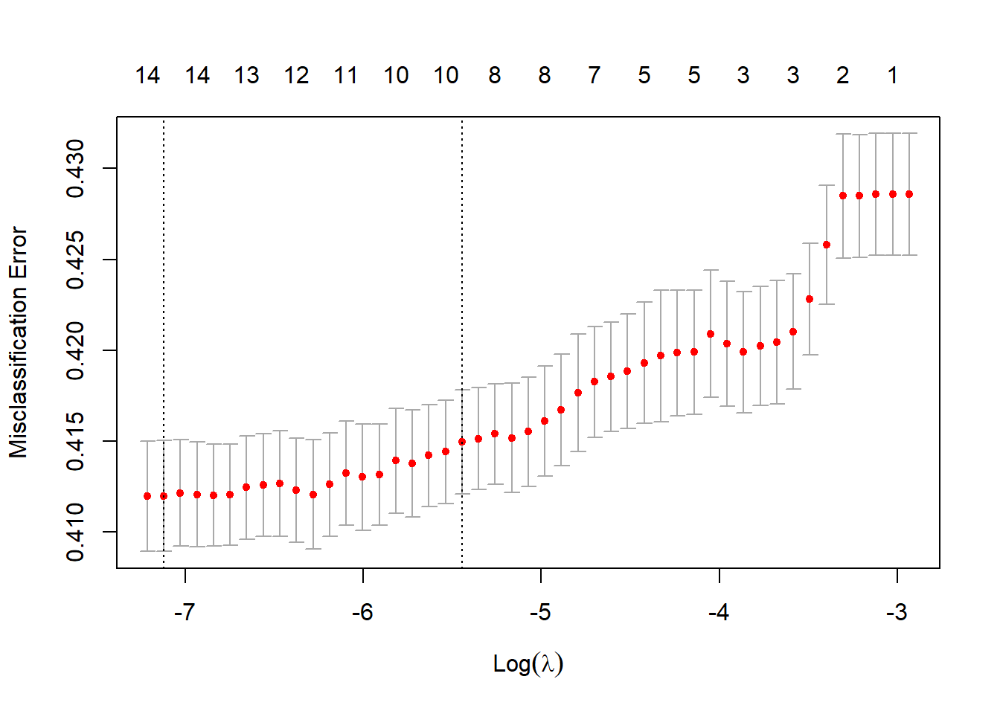
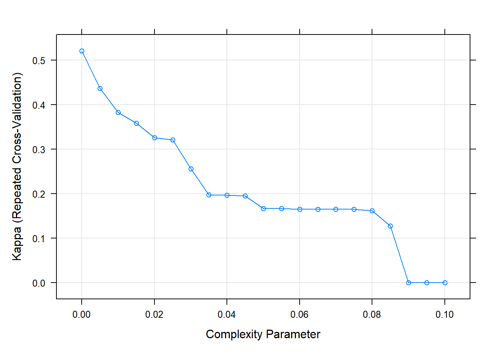

library(tidyverse)
library(rpart)
library(caret)
suppressWarnings(
library(DALEX))
library(ggthemes)
library(pROC)
library(patchwork)
library(corrplot)
library(glmnet)Classification Modeling
Classification means when the prediction is not a statistical number. In this case the prediction a category. The NVO case has the prediction being if a person responds to mailing which is a category.
The benefit of using modeling would be to focus resources on opportunities with higher potential. If a model can find people with a higher chance of responding the resources can be focused there.
The most important for evaluating these models is Precision and Sensitivity. Precision(Pos pred values) the model says yes, how often is that correct. We are looking to identify potential Yes. We want to utilize our resources on correct yes responses. Sensitivity is the rate of true positives captured by the program.
donor <- read.csv('donors.csv')glimpse(donor)Rows: 95,412
Columns: 22
$ age <int> 60, 46, NA, 70, 78, NA, 38, NA, NA, 65, NA, 75~
$ numberChildren <int> NA, 1, NA, NA, 1, NA, 1, NA, NA, NA, NA, NA, 2~
$ incomeRating <int> NA, 6, 3, 1, 3, NA, 4, 2, 3, NA, 2, 1, 4, NA, ~
$ wealthRating <int> NA, 9, 1, 4, 2, NA, 6, 9, 2, NA, 0, 5, 2, NA, ~
$ mailOrderPurchases <int> 0, 16, 2, 2, 60, 0, 0, 1, 0, 0, 0, 3, 16, 0, 1~
$ totalGivingAmount <dbl> 240, 47, 202, 109, 254, 51, 107, 31, 199, 28, ~
$ numberGifts <int> 31, 3, 27, 16, 37, 4, 14, 5, 11, 3, 1, 2, 9, 1~
$ smallestGiftAmount <dbl> 5, 10, 2, 2, 3, 10, 3, 5, 10, 3, 20, 10, 4, 5,~
$ largestGiftAmount <dbl> 12, 25, 16, 11, 15, 16, 12, 11, 22, 15, 20, 15~
$ averageGiftAmount <dbl> 7.741935, 15.666667, 7.481481, 6.812500, 6.864~
$ yearsSinceFirstDonation <int> 8, 3, 7, 10, 11, 3, 10, 3, 9, 3, 1, 1, 8, 5, 4~
$ monthsSinceLastDonation <int> 14, 14, 14, 14, 13, 20, 22, 18, 19, 22, 12, 14~
$ inHouseDonor <lgl> FALSE, FALSE, FALSE, FALSE, TRUE, FALSE, FALSE~
$ plannedGivingDonor <lgl> FALSE, FALSE, FALSE, FALSE, FALSE, FALSE, FALS~
$ sweepstakesDonor <lgl> FALSE, FALSE, FALSE, FALSE, FALSE, FALSE, FALS~
$ P3Donor <lgl> FALSE, FALSE, FALSE, FALSE, TRUE, FALSE, FALSE~
$ state <chr> "IL", "CA", "NC", "CA", "FL", "AL", "IN", "LA"~
$ urbanicity <chr> "town", "suburb", "rural", "rural", "suburb", ~
$ socioEconomicStatus <chr> "average", "highest", "average", "average", "a~
$ isHomeowner <lgl> NA, TRUE, NA, NA, TRUE, NA, TRUE, NA, NA, NA, ~
$ gender <chr> "female", "male", "male", "female", "female", ~
$ respondedMailing <lgl> FALSE, FALSE, FALSE, FALSE, FALSE, FALSE, FALS~sapply(donor, function(x) sum(is.na(x))) age numberChildren incomeRating
23665 83026 21286
wealthRating mailOrderPurchases totalGivingAmount
44732 0 0
numberGifts smallestGiftAmount largestGiftAmount
0 0 0
averageGiftAmount yearsSinceFirstDonation monthsSinceLastDonation
0 0 0
inHouseDonor plannedGivingDonor sweepstakesDonor
0 0 0
P3Donor state urbanicity
0 0 2316
socioEconomicStatus isHomeowner gender
2316 43058 4676
respondedMailing
0 We see there are 22 variables and 95,412 observations. Many are numeric however there are a few that need to be adjusted to be factors. There are logical columns, those will also be mutated to be factors.
There are 83,000 NAs with children. For that reason I will drop that column, that is to many NAs to make an assumption to make decisions from.
It can be assumed that incomeRating and Welathrating derive from eachother. Wealth rating has a lot more NAs so we will drop that column as well.
If home owner is NA it will be assumed that the answer is False
donor = donor %>% select(-numberChildren, -wealthRating, -urbanicity, -gender, -state, - socioEconomicStatus)
donor = donor %>%
mutate(incomeRating = ifelse(is.na(incomeRating),
4,
incomeRating))
donor = donor %>%
mutate(isHomeowner = ifelse(is.na(isHomeowner),
FALSE,
isHomeowner))donor = donor %>%
mutate(respondedMailing = as.factor(as.numeric(respondedMailing))) %>%
mutate(isHomeowner = as.numeric(isHomeowner))This is setting our response variable to a factor
library(corrplot)
na.omit(donor) %>%
keep(is.numeric) %>%
cor() %>%
corrplot()
There are a couple interesting correlations here. Total Giving Amount and Number of Gifts are strongly correlated which makes sense. Smallest Gift and Number of Gifts are correlated. That make sense because for example is a donor gives quite often the avarage size of the donation would be smaller because it is more frequent. Years Since First donation and Total Giving Amount makes sense. The longer you have been a donor the more you will have donated. Average Gift is correlated with the statistics with largest and smallest gift.
sapply(donor, function(x) sum(is.na(x))) age incomeRating mailOrderPurchases
23665 0 0
totalGivingAmount numberGifts smallestGiftAmount
0 0 0
largestGiftAmount averageGiftAmount yearsSinceFirstDonation
0 0 0
monthsSinceLastDonation inHouseDonor plannedGivingDonor
0 0 0
sweepstakesDonor P3Donor isHomeowner
0 0 0
respondedMailing
0 Now age is the only variable with NAs left
ggplot(donor) + geom_histogram(aes(x = age)) 
ggplot(donor)+ geom_boxplot(aes(x = age))
There are 20000 missing Values for age. However it is a variable we would like to keep. For that reason it is important that we keep The age distribution appears Bimodel. The disribution between the the modes apear very comparable. We will replace the NAs in age with the average. This will not affect the average and allow us to keep a lot more data.
donor = donor %>%
mutate(age = ifelse(is.na(age),
median(age, na.rm = TRUE),
age))table(donor$respondedMailing)
0 1
90569 4843 This is very disproportional. We will need to fix this.
donor <- donor %>% mutate(inHouseDonor = ifelse(inHouseDonor == TRUE, 1, 0)) %>%
mutate(plannedGivingDonor = ifelse(plannedGivingDonor == TRUE, 1, 0)) %>%
mutate(sweepstakesDonor =ifelse(sweepstakesDonor == TRUE, 1,0)) %>%
mutate(P3Donor =ifelse(P3Donor == TRUE, 1,0))Make some classification columns numerical
set.seed(4)
samp = caret::createDataPartition(donor$respondedMailing, p = 0.7, list = FALSE)
train = donor[samp,]
test = donor[-samp,]seperate into training and test data
(train$respondedMailing) %>% table() %>% prop.table().
0 1
0.94922893 0.05077107 test$respondedMailing %>% table() %>% prop.table().
0 1
0.94926979 0.05073021 We will use smote to get our data more proportionally accurate
#Smote Version
library(performanceEstimation)
set.seed(4959)
smote_train = smote(respondedMailing ~ .,
data = train)
table(smote_train$respondedMailing)
0 1
13564 10173 X = as.matrix(dplyr::select(smote_train, -respondedMailing))
Y = smote_train$respondedMailingcv_lasso = cv.glmnet(X, as.double(Y), type.measure = "class", family ="binomial")plot(cv_lasso)
There is a local minima at lamba = 3.6
building the tree
ctrl = caret::trainControl(method = "repeatedcv", number = 5, repeats = 30)
set.seed(1)
smote_tree = caret::train(respondedMailing ~ .,
data = smote_train,
method = "rpart",
metric = "Kappa",
trControl = ctrl,
tuneGrid = expand.grid(cp = seq(0.0, 0.1, 0.005)))
plot(smote_tree)
smote_treeCART
23737 samples
15 predictor
2 classes: '0', '1'
No pre-processing
Resampling: Cross-Validated (5 fold, repeated 30 times)
Summary of sample sizes: 18990, 18991, 18989, 18989, 18989, 18989, ...
Resampling results across tuning parameters:
cp Accuracy Kappa
0.000 0.7690174 0.5215109
0.005 0.7425551 0.4373467
0.010 0.7201795 0.3832428
0.015 0.7099674 0.3586786
0.020 0.6961340 0.3261311
0.025 0.6930543 0.3209928
0.030 0.6672057 0.2565214
0.035 0.6443722 0.1976412
0.040 0.6443133 0.1973714
0.045 0.6429020 0.1956744
0.050 0.6335982 0.1670253
0.055 0.6335982 0.1670253
0.060 0.6330001 0.1654525
0.065 0.6330001 0.1654525
0.070 0.6330001 0.1654525
0.075 0.6330001 0.1654525
0.080 0.6324005 0.1622933
0.085 0.6194265 0.1274436
0.090 0.5714286 0.0000000
0.095 0.5714286 0.0000000
0.100 0.5714286 0.0000000
Kappa was used to select the optimal model using the largest value.
The final value used for the model was cp = 0.Best Kappa is at .9
#rpart.plot::rpart.plot(smote_tree$finalModel)testing_mat = data.matrix(test)
lasso_test_class = predict(cv_lasso, testing_mat[,1:15], s=cv_lasso$lambda.min)lasso_cm = confusionMatrix(data = as.factor(ifelse(lasso_test_class > 0.5, 1, 0)), reference = as.factor(testing_mat[,15]), positive = "1")
lasso_cmConfusion Matrix and Statistics
Reference
Prediction 0 1
0 12744 15513
1 175 190
Accuracy : 0.4519
95% CI : (0.4461, 0.4577)
No Information Rate : 0.5486
P-Value [Acc > NIR] : 1
Kappa : -0.0013
Mcnemar's Test P-Value : <2e-16
Sensitivity : 0.012100
Specificity : 0.986454
Pos Pred Value : 0.520548
Neg Pred Value : 0.451003
Prevalence : 0.548634
Detection Rate : 0.006638
Detection Prevalence : 0.012752
Balanced Accuracy : 0.499277
'Positive' Class : 1
At first glance is would appear that our lasso model did not perform very well. The accuracy is not good, the sensitivity is very low. However the main evaluater we care about is Pos Pred Value (precision). This tells us when the model predicts yes, how often is it correct. While a 52% chance of being correct does not sound good. It is signficantly more efficient than taking random guesses.
smote_test_class = predict(smote_tree, newdata = test, type="raw")
smote_test_prob = predict(smote_tree, newdata = test, type="prob")[,1]#Tree Model
smote_cm = confusionMatrix(smote_test_class, test$respondedMailing, positive = "1")
smote_cmConfusion Matrix and Statistics
Reference
Prediction 0 1
0 22734 1196
1 4436 256
Accuracy : 0.8032
95% CI : (0.7986, 0.8078)
No Information Rate : 0.9493
P-Value [Acc > NIR] : 1
Kappa : 0.0063
Mcnemar's Test P-Value : <2e-16
Sensitivity : 0.176309
Specificity : 0.836732
Pos Pred Value : 0.054561
Neg Pred Value : 0.950021
Prevalence : 0.050730
Detection Rate : 0.008944
Detection Prevalence : 0.163930
Balanced Accuracy : 0.506520
'Positive' Class : 1
The Pos Pred Value of our tree was really not good. This model currently is too specific. This can be seen with a higher sensitivity meaning the rate of true positives captured by the program. This can be good because it means it will capture more positive responses, but with a lower precision will mean less efficient. Our tree model did significantly better.
par(pty="s")
lasso_roc = roc(testing_mat[,16], lasso_test_class,
plot=TRUE, print.auc=TRUE,
col="green", lwd=3, legacy.axes=TRUE)
smote_roc = roc(test$respondedMailing ~ smote_test_prob,
plot=TRUE, print.auc=TRUE, print.auc.y=0.7,
col = "black", lwd=3, legacy.axes=TRUE, add=TRUE)
legend("bottomright", legend=c("Lasso Model", "Tree"),
col = c("green", "black"), lwd=3)
This tells us that our Lasso Model appears to preform slightly better overall.
lasso_explain = DALEX::explain(model = cv_lasso,
data = testing_mat[,1:15],
y = testing_mat[,16]=="1",
type='classification',
label='Lasso Model')Preparation of a new explainer is initiated
-> model label : Lasso Model
-> data : 28622 rows 15 cols
-> target variable : 28622 values
-> predict function : yhat.cv.glmnet will be used ( default )
-> predicted values : No value for predict function target column. ( default )
-> model_info : package glmnet , ver. 4.1.7 , task classification ( default )
-> model_info : type set to classification
-> model_info : Model info detected classification task but 'y' is a logical . Converted to numeric. ( NOTE )
-> predicted values : numerical, min = 2.793412e-13 , mean = 0.4177559 , max = 0.8267794
-> residual function : difference between y and yhat ( default )
-> residuals : numerical, min = -0.825938 , mean = 0.5315139 , max = 1
A new explainer has been created! lasso_perf = DALEX::model_performance(lasso_explain, cutoff = 0.5)p1 = plot(lasso_perf, geom = "prc")
p2 = plot(lasso_perf, geom = "gain")
p1 + p2
With a similar proportion as our current data 50,000 people would mean there are 2,535 people that would respond to mailing. With a precision of .52 this would mean about 1268 of those people of those would be successfully identified. This is significantly better than at random however there are still a lot of missed opportunities.